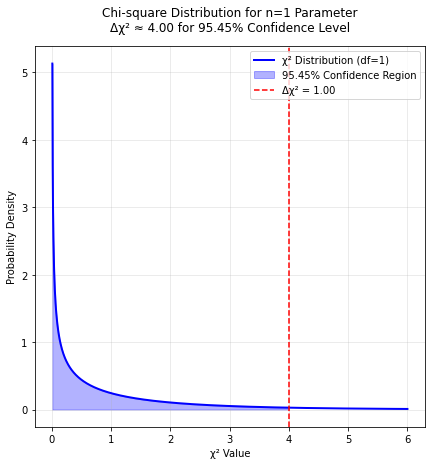
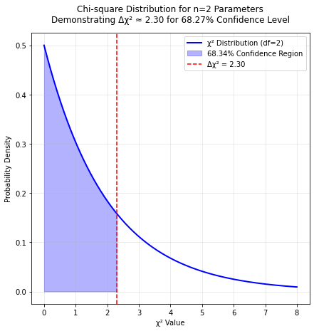

import numpy as np
import matplotlib.pyplot as plt
from scipy.stats import chi2
# Plot for n=1 parameter
def plot_chi2_n1():
x = np.linspace(0, 6, 1000)
chi2_1d_pdf = chi2.pdf(x, df=1)
plt.figure(figsize=(7, 7))
plt.plot(x, chi2_1d_pdf, 'b-', label='χ² Distribution (df=1)', linewidth=2)
# conf_region_x = x[x <= 4.00]
conf_region_x = x[x <= 4.00]
conf_region_y = chi2.pdf(conf_region_x, df=1)
# plt.fill_between(conf_region_x, conf_region_y, alpha=0.3, color='blue',
# label=f'{chi2.cdf(1.00, df=1):.2%} Confidence Region')
plt.fill_between(conf_region_x, conf_region_y, alpha=0.3, color='blue',
label=f'{chi2.cdf(4.00, df=1):.2%} Confidence Region')
plt.axvline(x=4.00, color='red', linestyle='--', label='Δχ² = 1.00')
# plt.title('Chi-square Distribution for n=1 Parameter\n'
# f'Δχ² ≈ 1.00 for 68.27% Confidence Level',
# fontsize=12, pad=15)
plt.title('Chi-square Distribution for n=1 Parameter\n'
f'Δχ² ≈ 4.00 for 95.45% Confidence Level',
fontsize=12, pad=15)
plt.xlabel('χ² Value')
plt.ylabel('Probability Density')
plt.grid(True, alpha=0.3)
plt.legend(fontsize=10)
plt.show()
# Plot for n=2 parameters
def plot_chi2_n2():
x = np.linspace(0, 8, 1000)
chi2_2d_pdf = chi2.pdf(x, df=2)
plt.figure(figsize=(7, 7))
plt.plot(x, chi2_2d_pdf, 'b-', label='χ² Distribution (df=2)', linewidth=2)
conf_region_x = x[x <= 2.30]
conf_region_y = chi2.pdf(conf_region_x, df=2)
plt.fill_between(conf_region_x, conf_region_y, alpha=0.3, color='blue',
label=f'{chi2.cdf(2.30, df=2):.2%} Confidence Region')
plt.axvline(x=2.30, color='red', linestyle='--', label='Δχ² = 2.30')
plt.title('Chi-square Distribution for n=2 Parameters\n'
f'Demonstrating Δχ² ≈ 2.30 for 68.27% Confidence Level',
fontsize=12, pad=15)
plt.xlabel('χ² Value')
plt.ylabel('Probability Density')
plt.grid(True, alpha=0.3)
plt.legend(fontsize=10)
plt.show()
plot_chi2_n1()

plot_chi2_n2()
